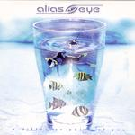

| Artist: | Alias Eye |
| Title: | A Different Point Of YOu |
| Label: | DVS Records |
| Length(s): | 51 minutes |
| Year(s) of release: | 2003 |
| Month of review: | [03/2004] |
| 1) | A Clown's Tale | 6.52 |
| 2) | Fake The Right | 5.02 |
| 3) | Your Other Way | 6.48 |
| 4) | Icarus Unworded | 6.36 |
| 5) | The Usual Routine | 4.42 |
| 6) | Drifting | 3.18 |
| 7) | On The Fringe | 7.04 |
| 8) | The Great Open | 7.28 |
| 9) | Too Much Toulouse | 3.16 |
Fake The Right is pretty rocky, giving a different take on the strong guitar, adding honky sax as well. Your Other Way is pretty poppy and straight forward. Whereas the opener already was a bit light on the structure, both these tracks display this effect even more, making it more tangible due to the rocky or poppy approaches.
Icarus Unworded is more gentle once again, almost slow. The slide guitar sounds give a somewhat traditional feel, especially combined with the ditto chords. It's nice, but once again I'm not quite convinced.
The Usual Routine starts pretty funky, to develop into a very happy, poppy, stompy superficial sounding bit. I, frankly, find this one quite dreadful. And the smoky trumpet and piano during the bridge, however nice they may be, cannot save it from a life in the irritation gallery.
Drifting is a dream and slow track. Nice instrumentation. Even though the song's structure is far from revolutionary this appears to be the first track about which I can be positive. This nice flowing feel is taken into On The Fringe, being carried by piano and cello, augmented with synth. Even though this still isn't rocket science, it at least is less jubilant, less in your face. Although the synth has a bad tacky moment towards the end.
The Great Open sees the return of the hackneyed guitar chords, including a guitar solo that is more guitar meister than melody. Having said that, the track does have a decent enough build up, with good use of piano and vocals.
Too Much Toulouse (nice pun) is a bit thirties jazzy. Strummy bass and piano, nice and spherical, also pretty different from what's gone before. To the point of: but why?
So, I would call this album a pleasant listen, but it lacks depth and durability.